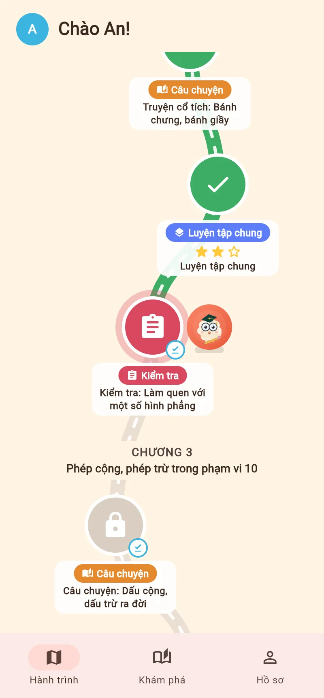
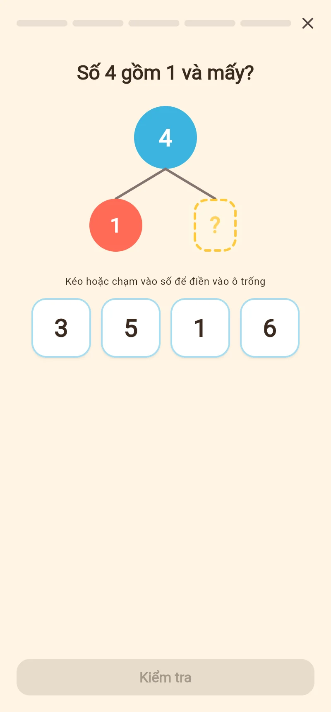
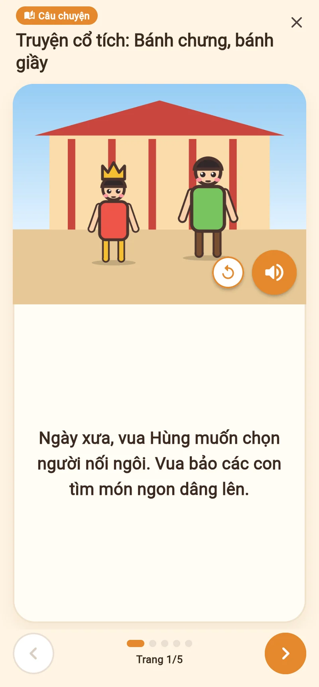
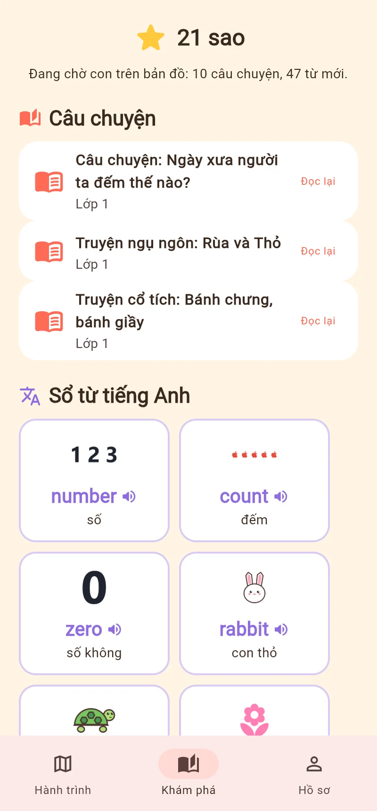
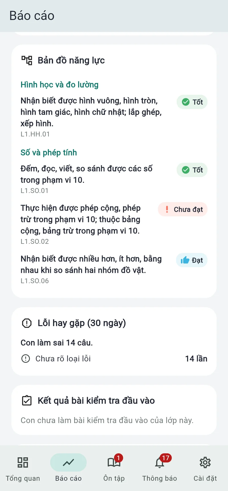
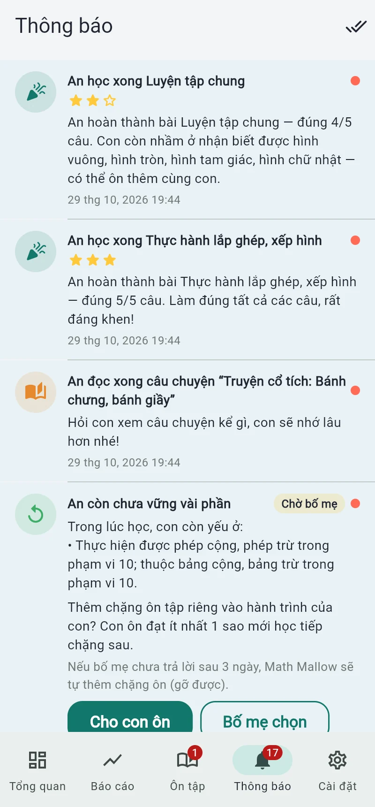

Math Mallow đưa bé đi qua từng chặng trên bản đồ phiêu lưu, học đúng chương trình ở trường theo cách hiểu bản chất của Toán Singapore. Bố mẹ biết rõ con đã vững phần nào, cần luyện phần nào sau mỗi bài.

Mỗi câu hỏi gắn với một "yêu cầu cần đạt" của Chương trình GDPT 2018 môn Toán. Thứ tự bài theo sách Kết nối tri thức với cuộc sống, nên bé học tới đâu khớp với lớp tới đó.
Dạy theo Toán Singapore: đi từ đồ vật cụ thể, tới hình ảnh, rồi mới tới con số. Sơ đồ tách – gộp số và mô hình thanh giúp bé "nhìn thấy" bài toán có lời văn.
Bé viết tay hay chụp ảnh bài làm trên giấy đều được chấm. Mức năng lực tính theo quy tắc rõ ràng, ổn định; AI chỉ viết lời nhận xét dễ hiểu gửi bố mẹ và lời khen cho bé.
Bé đi dọc bản đồ, mỗi chương là một chủ đề trong sách giáo khoa. Học xong một chặng thì mở chặng tiếp theo.

Mỗi dạng toán có cách trả lời phù hợp. Phần lớn được chấm ngay trên máy, câu viết tay hoặc ảnh chụp mới cần AI.


Xen giữa các chặng học là những chặng nghỉ chân thú vị, để bé thấy toán học gần gũi và có lịch sử, có con người.
Không chỉ là điểm số. Bố mẹ thấy được năng lực của con theo đúng từng yêu cầu của chương trình, chia theo mạch kiến thức.


Một hai câu ngắn gọn ngay khi con học xong: kết quả, phần con vừa nắm được, điều cần lưu ý.
So sánh với kỳ trước, phần tiến bộ và phần nên ôn lại. Nhận trong app, có thể bật thêm email.
Khi con còn yếu phần nào, app gợi ý chặng ôn riêng. Bố mẹ đồng ý thì mới thêm vào, hoặc tự chọn phần cần ôn.
Kiểm tra cuối chủ đề và định kỳ theo học kỳ, chấm thang điểm 10. Bố mẹ có thể giao thêm bài kiểm tra cho con.
Đặt số phút mỗi ngày cho từng con. App nhắc trước 5 phút và cho con làm nốt chặng đang dở rồi mới khóa.
Mỗi con một hồ sơ, một lộ trình riêng. Bố mẹ chọn lớp và chương con bắt đầu học.
Dữ liệu của con là điều bố mẹ quan tâm nhất, nên đó cũng là điều chúng tôi làm kỹ nhất.
Muốn vào cài đặt, xem báo cáo, cộng giờ hay thoát chế độ trẻ em đều phải nhập mã PIN hoặc vân tay, khuôn mặt của bố mẹ.
Email, tên con, mã PIN và các thông tin nhạy cảm được mã hóa trước khi lưu. Kể cả khi máy chủ bị xâm nhập cũng không đọc được.
Khi chấm bài, AI chỉ nhận nội dung bài làm và mã nội bộ, không có tên, ảnh mặt hay thông tin định danh của trẻ.
Video bài học lưu trên máy chủ riêng, không qua YouTube, nên không có quảng cáo hay video gợi ý. Bố mẹ có thể xóa tài khoản cùng toàn bộ dữ liệu của con bất cứ lúc nào.
Bản dùng thử đã có tại dev.math-mallow.com. Mời bố mẹ cùng bé vào học thử và góp ý để chúng tôi hoàn thiện trước khi phát hành chính thức.
Bản dùng thử có thể còn thay đổi giao diện và nội dung. Bản cài trên Android, iPhone và iPad sẽ có sau.
Được. Câu hỏi gắn với "yêu cầu cần đạt" của chương trình chung, không gắn cứng vào một bộ sách. Thứ tự bài hiện theo bộ Kết nối tri thức; bố mẹ có thể chọn chương con bắt đầu học cho khớp với lớp.
Bé lớp 2 trở lên làm một bài kiểm tra đầu vào ngắn để app biết mức của con. Phần nào còn yếu, app gợi ý chặng ôn và bố mẹ quyết định có thêm hay không. Bé lớp 1 chỉ có bài khởi động nhẹ nhàng, không chặn đường.
Bé có thể bấm chấm lại. Nếu vẫn bị chấm sai, câu đó vào mục "Cần đối chiếu" để bố mẹ xem ảnh bài làm và xác nhận Đúng hoặc Sai. Kết quả bố mẹ xác nhận được ưu tiên, sao và mức năng lực tự tính lại.
Có. Khi có Wi-Fi, app tải trước một hai chặng tiếp theo. Mất mạng, phần lớn câu hỏi vẫn chấm ngay trên máy; câu cần AI sẽ được chấm khi có mạng trở lại.
Không. Chúng tôi chọn không tạo áp lực "phải học mỗi ngày" hay so sánh với bạn khác. Bé được sao khi qua chặng, và có câu chuyện, từ tiếng Anh để khám phá — niềm vui đến từ chính việc học.
Bản dùng thử đang mở. Mời bố mẹ và các bé vào học thử, mọi góp ý đều giúp Mallow tốt hơn!
Dùng thử tại dev.math-mallow.com →